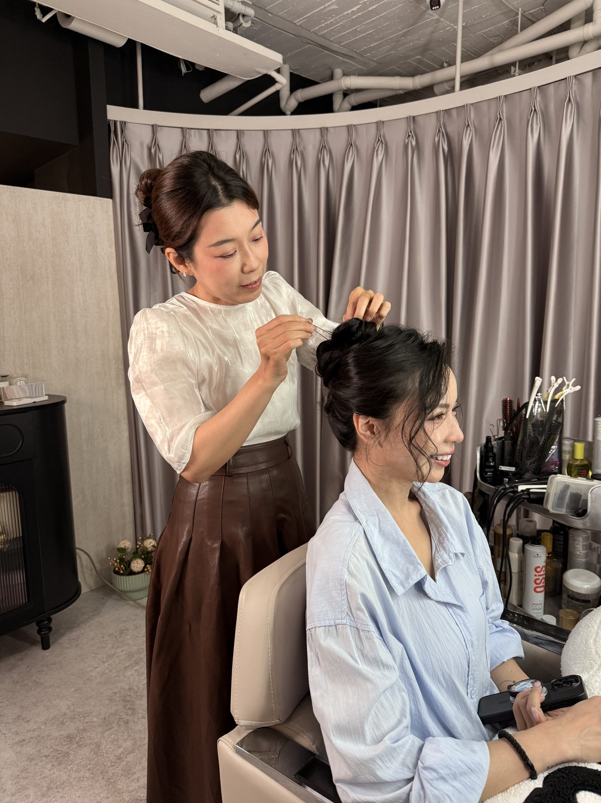

「我要預約化妝＋做頭髮。」對造型師來說，還需要再知道這次要去什麼場合。
午餐約會、董事會簡報和年會舞台，對妝感、燈光、持妝與髮型的要求都不同。B.room 因此依使用情境區分日常、商務與活動妝髮，預約時先確認場合，再安排適合的做法。
台中妝髮服務可以依使用情境分成日常妝髮、商務妝髮與活動妝髮。差異主要在場合、是否需要拍攝、妝髮需要維持多久，以及造型內容。
三種妝髮，先看這三件事
要分清楚自己需要哪一種，可以先看三件事：這次是什麼場合、主要是近距離互動、鏡頭拍攝還是舞台觀看，以及妝髮需要維持多久。
| 項目 | 日常妝髮 | 商務妝髮 | 活動妝髮 |
|---|---|---|---|
| 常見場合 | 聚會、約會、一般會面 | 簡報、會議、採訪、工作拍攝 | 講座、頒獎、品牌活動、晚宴 |
| 主要觀看方式 | 多為近距離 | 近距離互動，也可能有鏡頭 | 舞台、攝影與不同觀看距離 |
| 時間考量 | 一般出席時間 | 依工作行程與拍攝需求 | 依活動時間與流程 |
| 主要處理 | 膚況、眉眼、自然妝感、髮型 | 膚況、油光、眉眼、髮型輪廓、持妝 | 燈光、攝影、輪廓、髮型穩定與補整 |
| 標準服務時間 | 約 90 分鐘 | 約 120 分鐘 | 約 150 分鐘 |
觀看距離、燈光與拍攝方式不同，妝髮的處理也會跟著改變。舞台要考慮遠距離與強光，商務場合則比較常是近距離互動或鏡頭拍攝，因此妝面、輪廓與髮型不會用完全相同的做法。
日常、商務與活動妝髮的差別，在於使用場合與實際需求。
日常、商務、活動，實際差在哪裡
日常妝髮主要用在聚會、約會、紀念日與一般出席。會依本人喜好、服裝與當天場合調整膚況、眉眼與髮型，標準服務時間約 90 分鐘。
商務妝髮常見於重要簡報、面試、董事會、媒體採訪與工作拍攝。除了膚況與眉眼，還會一起考慮油光、妝面質地、髮型輪廓與持妝，標準服務時間約 120 分鐘。細節我們在〈商務妝髮是什麼〉單獨談。
活動妝髮常見於年會尾牙、頒獎典禮、記者會與產品發表。會依服裝、舞台燈光、攝影、活動時間與是否需要補整調整造型，標準服務時間約 150 分鐘。細節見〈活動妝髮：上台之前的最後一關〉。
預約時要提供什麼
預約時提供場合、活動時間，以及當天是否還有其他行程即可。如果同一天有簡報和晚宴，也可以一起說明，我們會依行程與當下妝況安排適合的方式。
實際的服務內容與時間，會在 B.room 預約時一併確認。

常見問題
台中妝髮服務怎麼選？日常、商務、活動差在哪？+
日常、商務與活動妝髮主要依使用場合區分。聚會與一般出席多屬日常妝髮；簡報、會議、採訪與工作拍攝多屬商務妝髮；講座、頒獎、品牌活動與晚宴則較常使用活動妝髮。
一次妝髮要做多久？+
日常妝髮標準服務時間約 90 分鐘，商務妝髮約 120 分鐘，活動妝髮約 150 分鐘。商務妝髮會額外考慮鏡頭、燈光、工作時間與髮型細節；活動妝髮則會依造型內容與現場流程調整。若需要的是舞台、主題性或特殊造型，屬於主題妝髮造型的範圍，時間與內容另外溝通。企業團體梳化依人數與現場流程另行安排。
我不確定自己的場合算哪一種，怎麼辦？+
直接告訴我們場合、時間，以及是否有拍攝或下一場行程即可，我們會再確認適合的服務類型與時間。
男士也適用這三種分類嗎？+
男士也可以依場合安排日常、商務或活動妝髮。常見處理包括膚色不均、油光、眉型與髮型輪廓；需要拍攝或上台時，再依現場燈光與鏡頭需求調整。處理方向通常以自然為主，不需要刻意做出明顯妝感。
可以到府或到公司服務嗎？+
可以在勤美店或指定地點服務。若希望在公司、活動場地或其他指定地點完成妝髮，預約時提供地點與正式行程時間，我們會再確認服務範圍、交通與開始時間。